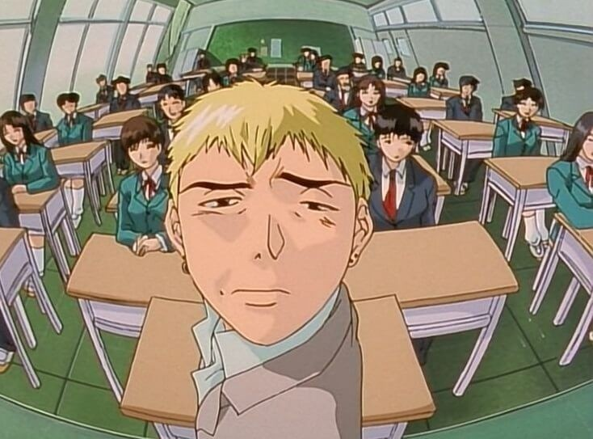

un nouvel enseignement est la clef du succes
L'arrivée d'Eikichi Onizuka à l'école est un grand événement. Son approche non conventionnelle de l'enseignement défie les attentes traditionnelles et suscite à la fois curiosité et émerveillement parmi les élèves. L'bjectif ? Inspirer et transformer la manière dont l'éducation est perçue.

Onizuka super prof
Le meilleur prof
Eikichi Onizuka, alias "Great Teacher Onizuka" (GTO), défie les conventions de l'enseignement traditionnel. Avec son apparence rebelle et sa méthode peu orthodoxe, il s'engage pleinement à aider ses élèves. Sa passion et son désir sincère de les voir réussir en font un modèle inspirant pour ceux qui croient en la puissance de l'éducation pour changer des vies.